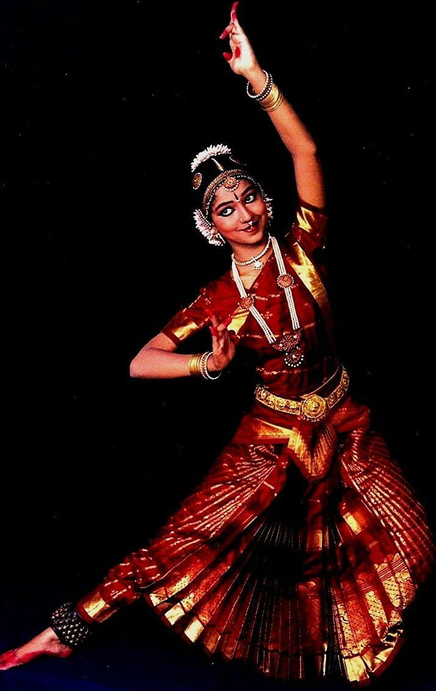

BHARATANATYAM

Bharatanatyam is a dance of Tamil Nadu in southern India. It traces its origins back to the Natyashastra, an ancient treatise on theatre written by the mythic priest Bharata. Originally a temple dance for women, bharatanatyam often is used to express Hindu religious stories and devotions. It was not commonly seen on the public stage until the 20th century. The dance movements are characterized by bent legs, while feet keep rhythm. Hands may be used in a series of mudras, or symbolic hand gestures, to tell a story.